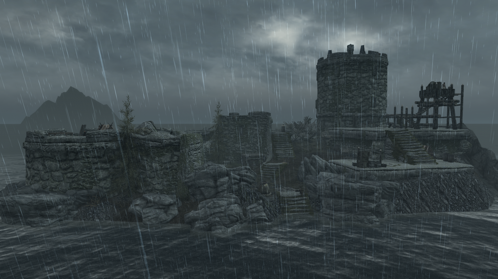
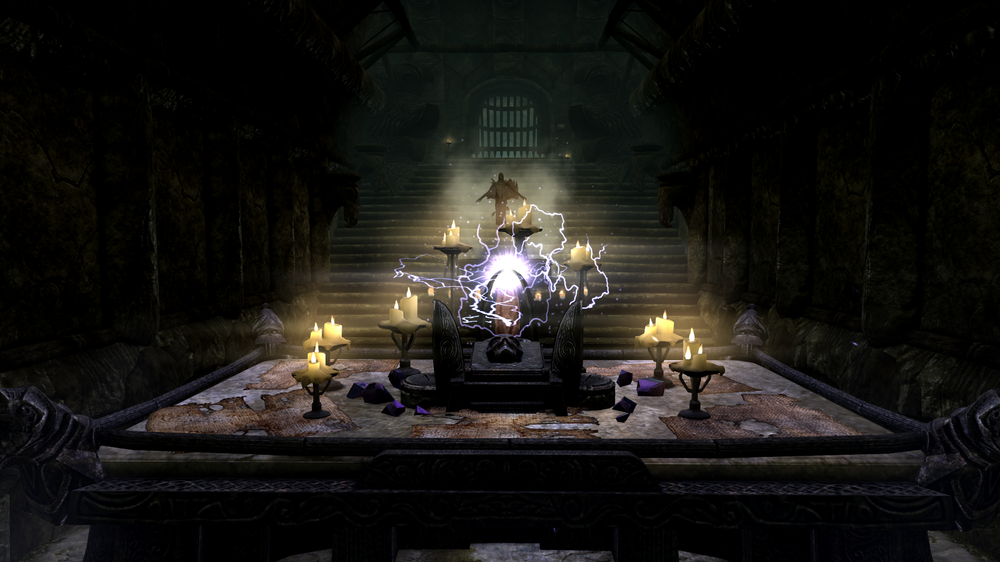

Isle of Storm
(Originally posted on 17.5.2019)

What
A mod for Elder Scrolls V: Skyrim
An island located northeast of Solitude and north of Orphan’s Tear
Why
To give melee fighters better protection against magical attacks. Contains a mask with high armor rating and magic resistance.
Design
Visual and audial theme of thunder, lightning and rain
Semi-linear area with three levels: one exterior and two interior spaces
More emphasis on puzzles instead of combat
Player agency is not always given and thus requires attention to detail and careful exploration.
Loot
Maarqah (The Terror Mask)
-100% Magicka Regeneration
+50% Magic Resistance
Always Storm on Exterior
24 Armor rating (1 Higher than Daedric) 20 Weight (3 Less than Daedric)
Available
Repo
Nexus
Bethesda (PC)
Bethesda (XBOX)
Other
Puzzle solutions
